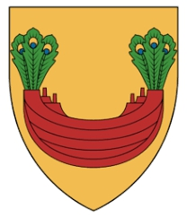

Antavla
187797 Cecilia Abrahamsdotter Bonde (Baad av Halland)

Far:
Abraham Brodersson (1350? - 1410)
Mor:
Cecilie Nielsdatter Järnskägg (<1390 - >1470)
Född:
omkring 1407.
Barn med
187796 Steffen Pedersen Romel (1390? - )
Barn:
Peder Steffensen Romel (1430? - 1515)
Personhistoria
Årtal
Ålder
Händelse
1407?
Födelse omkring 1407
1410
Fadern
375594 Abraham Brodersson
dör 1410-08-27 Sønderborg, Danmark
[1]
1430?
Sonen
93898 Peder Steffensen Romel
föds omkring 1430
>1470
Modern
375595 Lady Cecilie Nielsdatter Järnskägg
dör efter 1470-07
[1]
1505
Barnbarnet
46949 Anna Pedersdotter (Rommel)
föds 1505 Halland (N)
1515
Sonen
93898 Peder Steffensen Romel
dör 1515-07-29
>1532
Barnbarnet
46949 Anna Pedersdotter (Rommel)
dör efter 1532 Olsnäs, Stenkyrka, Tjörn (O)
Källor
[1]
Kent Fobian